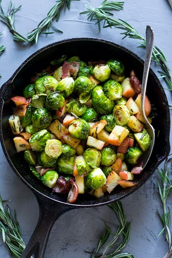

Roasted Brussels Sprouts with Bacon and Apples
Original Recipe by Michele from Paleo Running Momma



Prep time: 5 minutes || Cook time: 20 minutes || Total time: 25 minutes || Serving: 4
Ingredients
- 1 lb brussels sprouts, tops removed and cut in half(to ensure even cooking, they should be uniform in size)
- 2 tsp olive oil
- 1 apple, chopped into 1/2-1 inch cubes
- 4-6 bacon, cut into 1 inch pieces
- 1 Tbsp fresh rosemary finely chopped
- salt and pepper to taste
Instructions
- Preheat your oven to 400 degrees
- Toss the brussel sprouts with olive oil + salt. Roast until they're browning and fork tender (about 20 minutes).
- Over medium-high heat, cook the bacon pieces until about 3/4 of the way done
- Add the apples and rosemary. cook and stir until the apples have softened and the bacon is fully cooked. Remove from heat.
- Once brussels sprouts are done, add them to the skillet and toss to combine all the flavors. Sprinkle with more salt and pepper.
Can be served as a side dish or over breakfast with eggs.